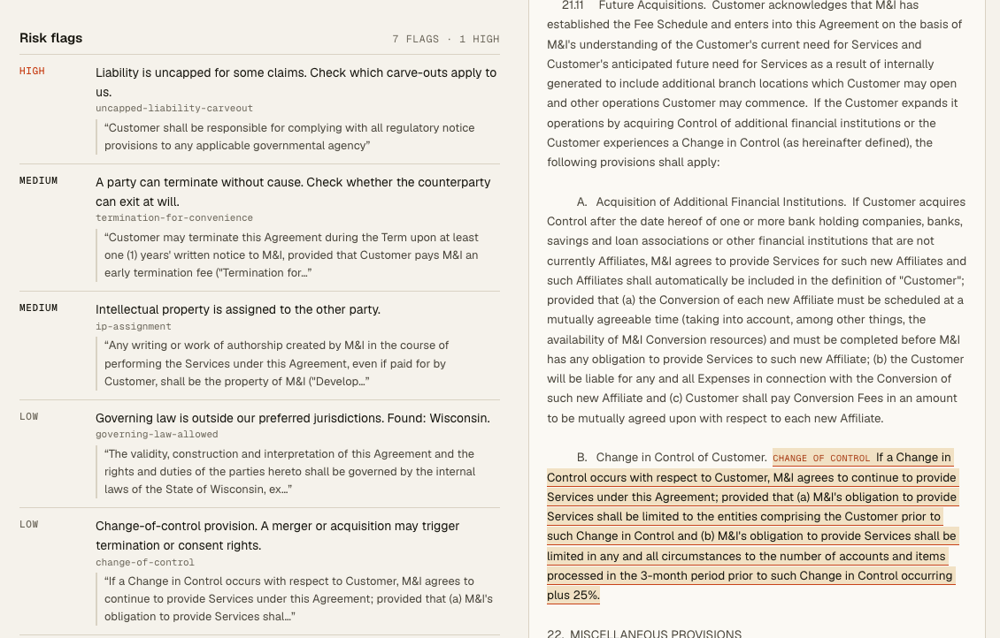

Work / 03 / contract-review-ai
Contract clauses you can verify, not just read.
Upload a contract and get its 12 highest-stakes clauses: renewal, liability cap, exclusivity, assignment and more. Each one comes with the exact text and its location, checked against the document by code. A team-owned playbook flags risks, and Q&A answers with verified citations. About $0.0015 per contract.
The idea
Small legal and ops teams spend hours on the first read of vendor and partner contracts, hunting for the renewal terms, the liability cap, the exclusivity and assignment clauses. A generic AI summary doesn't help much, because it paraphrases, and sometimes invents, the clause you need to rely on.
The rule here is simple: the model quotes, code checks.
- Extract. One Claude Haiku 5.5 call with JSON-schema output returns, for each of 12 clause types, whether it is present and the quotes that show it.
- Verify. Code matches every quote against the document and maps it to exact character offsets. A quote that can't be found is dropped, and a clause counts as found only if one of its quotes verifies.
- Flag. Risk comes from the team's own YAML playbook, evaluated in code over verified clauses only. Notice periods and jurisdictions are parsed from the quote text, not taken from the model.
- Ask. Questions get answers with citations, and every citation is verified the same way. An answer with no verified citation is marked unsupported.

The review graph
Review is a six-node LangGraph pipeline. Only one node uses a model. Long contracts take a detour through a free lexical prefilter, and short ones (under 3K tokens) go to the model whole.
mode=auto, documents of 3,000 estimated tokens or more go through the prefilter; 81 of the 102 test contracts did.Results on held-out contracts
The dataset is CUAD v1 (The Atticus Project, CC BY 4.0): 510 commercial contracts with lawyer-annotated clause spans. I used the authors' official split. The 408 train contracts were the dev set for prefilter tuning, prompt iteration and verifier fixes. Everything below is on the 102 test contracts, scored as 102 × 12 = 1,224 present/absent decisions, after verification.
| Configuration | micro F1 | N | micro P | micro R | macro F1 | span hit | Jaccard | $/contract | p50 |
|---|---|---|---|---|---|---|---|---|---|
| Naive: whole contract, category names only · Haiku | 0.821 | 102 | 0.751 | 0.906 | 0.780 | 0.959 | 0.655 | $0.00228 | 5.1 s |
Whole contract + extract.v2 prompt · Haiku | 0.889 | 102 | 0.845 | 0.937 | 0.858 | 0.970 | 0.692 | $0.00272 | 3.8 s |
Final: prefilter + extract.v2 + verify · Haiku | 0.893 | 102 | 0.848 | 0.944 | 0.862 | 0.968 | 0.702 | $0.00151 | 3.6 s |
| Final, exact-only verifier (ablation) · Haiku | 0.888 | 102 | 0.850 | 0.930 | 0.857 | 0.967 | 0.703 | $0.00151 | 3.6 s |
| Final · Haiku 5.5, 40-contract subset | 0.901 | 40 | 0.847 | 0.964 | 0.875 | 0.950 | 0.715 | $0.00149 | 3.6 s |
| Final · Sonnet 5.5, same 40 contracts | 0.902 | 40 | 0.863 | 0.946 | 0.880 | 0.975 | 0.692 | $0.0292 | 5.6 s |
Span hit: among true positives, the share where a quote overlaps a gold span. Jaccard: character overlap with the gold spans. The Sonnet subset is seeded.
Paired bootstrap over contracts, 5,000 resamples, difference in micro-F1:
| Comparison | Δ | 95% CI |
|---|---|---|
| Final vs naive (N = 102) | +0.072 | [+0.049, +0.096] |
| Final vs whole contract, same prompt (N = 102) | +0.005 | [−0.013, +0.022] |
| Sonnet 5.5 vs Haiku 5.5 (N = 40) | +0.001 | [−0.024, +0.025] |
Read plainly: the prompt work is a real gain. The prefilter's cost saving comes with no measurable change in quality, in either direction. And the stronger model buys nothing measurable here.
Four problems worth solving
01 The real enemy was page footers, not hallucinations
I expected verification to catch invented quotes. It mostly caught real ones. CUAD's text, like most text pulled from PDFs, has page headers, footers and ----- rules in the middle of sentences. The model quotes the sentence the way a person reads it, so an exact match rejects a genuine clause.
- Normalization treats separator rules as whitespace and keeps an offset map back to the original text.
- A “stitched” matcher binary-searches the longest matching prefix, then continues within 400 characters, up to 4 in-order fragments of at least 20 characters each.
- A repaired quote is replaced with the document's own text over the matched span, so the UI only ever shows verbatim text.
| Configuration (test) | quotes | dropped | repaired |
|---|---|---|---|
| Final | 599 | 2 | 11 |
| Naive | 645 | 4 | 23 |
| Exact-only verifier (ablation) | 599 | 13 | – |
The exact-only verifier lost 6 true-positive clauses (and removed 3 false positives): F1 0.888 against 0.893. Genuine fabrications were 2 of 599, or 0.3%, and both look plausible, which is why they matter. In one, the model finished a sentence the extracted text cuts off: “which consent shall” became “…shall not be unreasonably withheld.” In the other, it joined clauses 7.1 and 7.1.3 into one quote. Both were dropped.
02 A free prefilter instead of embeddings
Whole-contract requests averaged 17.9K input tokens, and the longest passed 100K, where Haiku's per-token price is 5× higher. Rather than add embeddings or map-reduce, the prefilter scores sections with BM25 against each clause type's description and keywords, keeps the top 3 per type plus up to 6 anchor-keyword hits, and sends the union with [...] marking the gaps.
I picked k on the train split with a sweep that makes no model calls: at k = 3, 98.6% of present clauses stay reachable with 45% of the tokens. On test, mean input tokens fell from 17,881 to 10,060 (−44%), mean cost from $0.00272 to $0.00151, and the most expensive contract from $0.054 to $0.004.
03 Quality came from prompt boundaries
A prompt that only names the categories over-triggers on look-alikes. Version 1 added CUAD's own category definitions. Version 2 added boundary notes written from dev-split false positives:
# prompts/extract.v2.yaml · a few boundary notes
uncapped liability an indemnity alone is not uncapped liability
IP assignment a party keeping its own IP is not assignment
auto-renewal renewal by mutual agreement is not a renewal term
termination for conv “may NOT be terminated for convenience” is not foundOn 60 dev contracts, micro-F1 went from 0.865 (v1) to 0.882 (v2). On test, uncapped-liability F1 rose from 0.351 (naive) to 0.743, and IP assignment from 0.582 to 0.750.
04 The model never decides risk, and a bigger model wasn't worth it
Risk is policy, so it belongs to the team, not the model. The playbook is YAML with four rule types (required, forbidden, min_notice_days, allowed_values) and runs over verified clauses only, so a dropped quote can never raise a flag. Code parses “ninety (90) days” to 90 and reads the jurisdiction from the quote.
Before settling on a model, I ran Sonnet 5.5 on the same 40 test contracts. It scored 0.902 against Haiku's 0.901 (Δ +0.001, CI [−0.024, +0.025]) at 19.6× the cost and 2 s more at p50. Haiku stays the default.

Per clause type
Final pipeline, test N = 102. Presence detection is strong on the clearly worded clauses and weaker where CUAD's labels are themselves fuzzy.
| Clause type | F1 |
|---|---|
| Governing law | 0.994 |
| Anti-assignment | 0.986 |
| Audit rights | 0.925 |
| Auto-renewal | 0.923 |
| Notice to stop renewal | 0.903 |
| Exclusivity | 0.877 |
| Liability cap | 0.864 |
| Termination for convenience | 0.818 |
| Change of control | 0.815 |
| Non-compete | 0.750 |
| IP assignment | 0.750 |
| Uncapped liability | 0.743 |
Cited Q&A
Each clause type becomes a plain question, such as “Can either party terminate without cause, just by giving notice?”. Each of 30 test contracts gets up to 2 questions whose clause is present and 2 whose clause is absent: 113 questions in all. Retrieval is BM25 over sections; the answer is structured, and every citation is verified. Each answer costs about $0.0003, with a p50 of 1.2 s.
| Retrieval (test) | answers iff clause exists | present → answered | present → citation on gold | absent → abstained | unverified citations |
|---|---|---|---|---|---|
| BM25 on the question | 0.832 | 0.782 | 0.764 | 0.879 | 0/94 |
| BM25 + category query expansion | 0.841 | 0.836 | 0.800 | 0.845 | 0/102 |
Production basics
- Hard spend cap. A ledger checks each call's worst-case cost before it is sent, and the API returns 429 once the budget is gone. The whole project, including development, every eval run and the demo, spent $2.27 of a $5.00 cap (the Sonnet comparison was about $1.17 of that).
- Response cache keyed on the exact request body, so identical calls cost $0. Per-call tokens, cost and latency go to JSON logs.
- Latency: p50 3.6 s and p95 6.9 s per contract, one call.
- 35 offline pytest tests with a faked LLM transport: normalization and offsets, page-break and truncated-sentence verification, PDF/DOCX/TXT parsing, prefilter, playbook rules, ledger and pricing tiers, pipeline routing, Q&A citation checks, API errors, bootstrap.
- CI on GitHub Actions: lint, format and tests on Python 3.12 and 3.13, plus a Docker build.
docker compose up --buildverified end to end. - Reproducible evals:
make eval-allregenerates every row above into committed JSON andRESULTS.md.
Limitations
- Precision is weak in three types: uncapped liability (P 0.59), IP assignment (P 0.64) and non-compete (P 0.64). Some of those errors are CUAD label inconsistencies, but not all.
- Span boundaries are looser than presence: mean Jaccard with gold spans is 0.70. The model often quotes one sentence where annotators marked several.
- Q&A still answers 15% of absent-clause questions.
- The Sonnet comparison (N = 40) and the Q&A eval (113 questions) are small, and their confidence intervals are wide.
- No OCR, so scanned PDFs are rejected. Tuned on English, SEC-filed commercial agreements.
- Single tenant, no auth, and SQLite allows one writer. This is not legal advice.
Stack
Fits more than contracts
The same pattern (structured extraction, every quote verified against the source by code, rules owned by the team, a measured eval on labeled data, and a hard cost cap) fits policies, claims, invoices, compliance filings and any document where a wrong quote is worse than none.